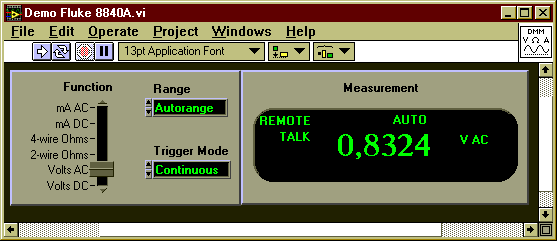
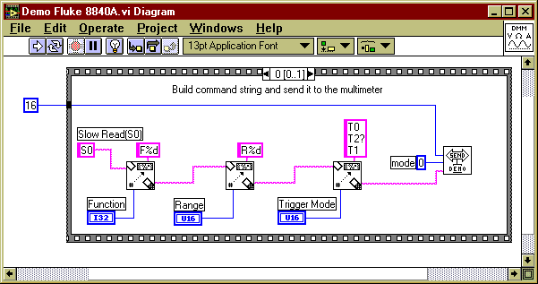
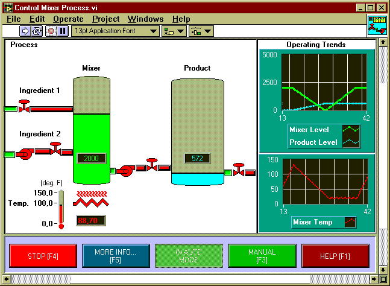

1. Первое знакомство с LabVIEW1.1. Что такое LabVIEWLabVIEW (Laboratory Virtual Instruments Engineering Workshop) - это система программирования, разработанная фирмой National Instruments (США) и ориентированная на создание приложений в области автоматизации научных исследований, управления производством и промышленными установками и т.п. LabVIEW по своим возможностям приближается к системам программирования общего назначения, например к Delphi. Тем не менее, между ними существует ряд важных различий.
1.2. Виртуальные приборы в LabVIEWКаждая программа LabVIEW представляет собой отдельный виртуальный прибор (ВП), то-есть - программный аналог некоторого реально существующего или воображаемого устройства, состоящий из двух взаимосвязанных частей. 1. Первая часть, лицевая панель, описывает внешний вид ВП и содержит множество средств ввода информации - так называемых средств управления, а также множество средств визуализации информации - так называемых индикаторов.

Рисунок 1.1. Лицевая панель ВП - аналога цифрового тестера Fluke 8840A На рисунке 1.1 к индикаторам относится, например, табло "Measurement", отображающее разряды числового значения измеряемой величины, а к средствам управления - ползунок "Function", переключатель диапазона измерений "Range" и переключатель режима измерений "Trigger Mode". 2. Вторая часть, блок-схема (или блок-диаграмма) описывает алгоритм работы ВП.

Рисунок 1.2. Блок-схема ВП - аналога цифрового тестера Fluke 8840A Каждый ВП, в свою очередь, может использовать в качестве составных частей другие ВП, подобно как любая программа, написанная на языке высокого уровня, использует свои подпрограммы. Такие ВП нижнего уровня обычно называются субВП. На рисунке 1.2 к субВП относится элемент "Send DEMO" - это ВП, непосредственно реализующий операции по переключению диапазонов, преобразованию сигналов, генерации поразрядного представления результата и т.п. Также на рисунке можно отметить многочисленные функциональные блоки, играющие роль "задних контактов" для объектов лицевой панели, - это так называемые терминалы. Каждому терминалу обязательно соответствует какой-либо индикатор или средство управления, расположенные на лицевой панели. Важными элементами блок-схемы являются функциональные узлы - встроенные субВП, являющиеся частью LabVIEW и выполняющие предопределенные операции над данными. Данные от терминалов к функциональным узлам и между различными функциональными узлами передаются при помощи связей, которые изображены на рисунке разноцветными линиями различной толщины. Наконец, рамка со скругленными углами, ограничивающая группу соединенных между собой терминалов и функциональных узлов, - это функциональный узел особого вида, управляющая структура. 1.3. Использование LabVIEWОбычному пользователю, как правило, приходится иметь дело с уже готовыми, заранее разработанными другими людьми ВП. Ему доступна только лицевая панель ВП, в то время как блок-схема ВП скрыта от его глаз. Пользователь снимает какие-либо показания, следит за ходом выполнения какого-нибудь процесса или даже контролирует его ход, используя средства управления передней панели - ручки, тумблеры, кнопки и т.п.

Рисунок 1.3. Пример ВП, предназначенного для управления технологическим процессом Надо очень четко представлять себе, что ВП - это только модель тех элементов реального прибора или установки, которые гораздо проще и дешевле реализовать в виде программы. Но для того, чтобы ВП можно было использовать как реальный заменитель конкретного осциллографа или распределительного щита, необходимо осуществить связь между объектом физического мира (например, управляемой технологической установкой, см. рисунок 1.3) и программой ВП. Эта связь традиционно осуществляется при помощи специализированных технических средств, - датчиков, аналогово-цифровых и цифро-аналоговых преобразователей, интерфейсов передачи данных и пр., - образующих в совокупности комплекс устройств связи с объектом (УСО). Соответственно, ВП должен иметь выход на программу (драйвер) обслуживания внешнего устройства, являющегося частью УСО (например, на драйвер "измерительной платы", драйвер контроллера КАМАК и т.п). Обычно в роли такого "связующего звена" выступает функциональный узел блок-схемы ВП или субВП, недекомпозируемый на более мелкие структурные составляющие. Часто он представляет собой фрагмент программного кода, разработанный не средствами LabVIEW, а при помощи языка Ассемблера или Си. (с) Constantin E. Climentieff aka DrMad, mailto: drmad@dr.com * http://www.chat.ru/~drmad |